अनाड़ी इसलिए लिखा कि आप सब मेरे पाक कला ज्ञान से अच्छी तरह से वाकिफ़ है। मेरे बनाए खाने का क्या-क्या हाल हुआ। लेकिन इन गर्मियों की छुट्टियों में लगन से खाना बनाना सीखा और सब्जी-रोटी बिना किसी गलती के एकदम सही बनाई भी।
पिछले दिनों फेसबुक पर मैने अपने हाथों से बनाए मक्के के हल्वे का फोटो लगाया तो बहुत से मित्रों ने उसकी रेसेपी पूछी, तो मैं आज आप सभी के लिए मक्काई का हल्वा बनाने की विधी पेश कर रहा हूँ। इस स्वादिष्ट हलवे को राजस्थानी में “जाजर्यो/ जाजरियो” कहते हैं।
बनाने से पहले ध्यान देने योग्य बातें:
मक्काई का हल्वा बनाने के लिए अन्य मिठाईयों की तुलना में अधिक मेहनत और समय लगता है।

सामग्री:
6 हरे और कोमल दानों वाले देशी ( स्वीट कोर्न नहीं) भुट्टे, जिनके दानों को नाखुन से दबाने पर दूध निकलता हो।
शुद्ध घी 200 ग्राम, शक्कर 200 ग्राम ( स्वादानुसार कम या ज्यादा की जा सकती है)
काजू, किशमिश और अपने मनपसन्द कटे हुए सूखे मेवे 1 कप, 1 लीटर पानी
बनाने से पहले की तैयारी।
भुट्टों को छील लें और ध्यान रखें कि उसमें भुट्टे की मूछें (बाल) ना रहने पाये
भुट्टों को छलनी या किसनी पर किस लें, ध्यान रखें कि मक्की के छिलके किसते नीचे ना जायें वैसे छिलका ऊपर जाली में रह जाता है, उसे निकालते जायें और फेंक दे।
विधी:
- एक मोटे पैंदें वाली कड़ाही में घी तेज गर्म करें जब घी अच्छी तरह गर्म हो जाये किसी हुई मक्का को घी में डाल दें और चम्मच या खुरपे से हिलाते जाएं। इस दौरान गैस की आँच एकदम धीमी रखें, आपको कम से कम 45-50 मिनिट तक इसे हिलाते रहना पड़ेगा, हिलाते समय चम्मच बिल्कुल रुके नहीं वर्ना हल्वा चिपक जायेगा और जल जायेगा। चित्र क्रमांक 1-2
- अब इसमें से पानी उड़ जायेगा और घी भी गायब हो जायेगा और यह एकदम सूख जायेगा मानों आप मक्की की सूजी को भून रहे हों। इस समय तेज खुशबु भी आने लगेगी। पदार्थ का रंग लाल होने लगेगा, अभी कुछ देर और सेकें। चित्र-3
- अब दूसरे गैस पर पानी गर्म करें, पानी उबलने तक गर्म करें चित्र-6
- पहले वाले गैस पर हलवा एकदम लाल होने लगे (चित्र-4) ध्यान रखें कि जल कर काला ना हो जाये, तब खौलता हुआ गर्म पानी उसमें सावधानी से डाल दें, और अब धीरे धीरे हिलाएं लेकिन रुके नहीं वर्ना गांठे पड़ जायेंगी।चित्र-5
- कुछ देर में पानी उड़ने लगेगा अब आप इसमें सूखे मेवे डाल दें, और हिलाते रहें। चित्र 7
- जब पानी एकदम उड़ जाये आप इसमें चीनी डाल दें। चित्र 8-9
- कुछ देर और हिलायें जब शक्कार घुल जायेगी वापस अपने आप घी दिखने लगेगा। अगर आपको यहाँ घी कम दिखता है तो और अगर आपका स्वास्थय इजाजत दे तो थोड़ा घी और डालें। चित्र 10-11-12
- बस हल्वा तैयार है, गर्मा-गर्म परोसें और सूखे मेवों की सजावट करें और खाएं। यह गर्म तो स्वादिष्ट लगता है ही, ठंडा होने पर भी अच्छा लगता है। चित्र 13
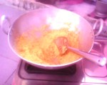
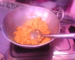
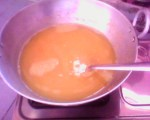
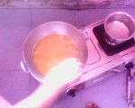
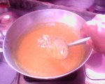
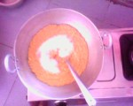
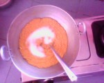
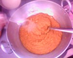
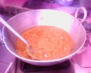
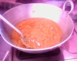
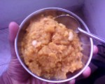
यहाँ भी दाल रोटी चावल